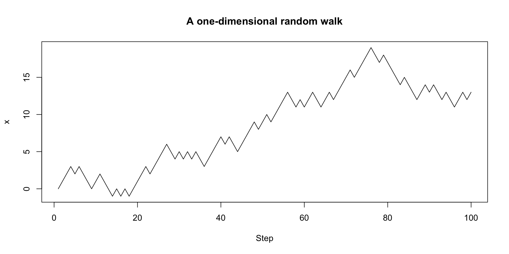
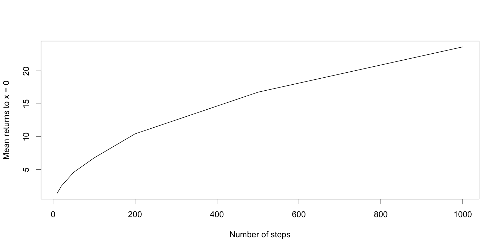
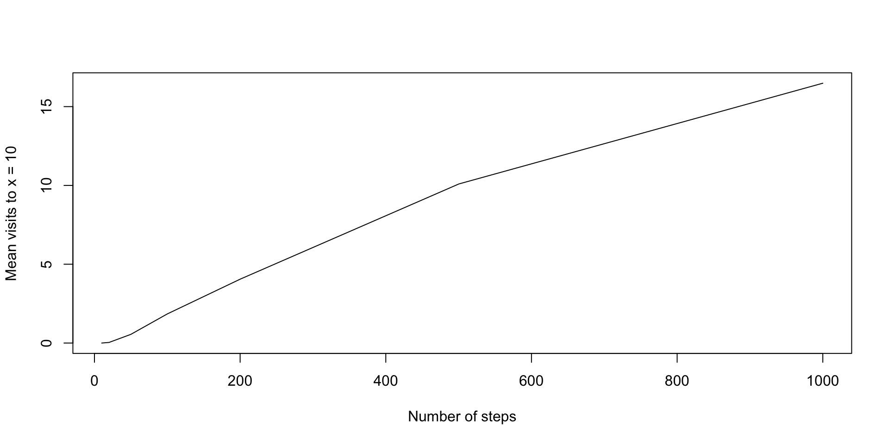

The area of a radius \(r\) circle is \(\pi r^2\). How could we use simulation to estimate \(\pi\)?
Hint: what if we randomly generated points on a square?
Random walks are stochastic processes that describe a sequence of random steps on some space.
A simple example is the one-dimensional random walk on the integer number line which starts at 0 and for each step, moves forward (+1) or backward (-1) with equal probability.
We can simulate a one-dimensional random walk:
We can then plot our results:
We can also adopt a more functional approach:
A two-dimensional random walk takes place on the integer grid, where at each step, we can either walk north, south, east, or west.
take_step_2d <- function() {
steps <- rbind(c(0, 1),
c(0, -1),
c(1, 0),
c(-1, 0))
return(steps[sample(1:4, 1), ])
}
walk_randomly_2d <- function(n_steps, start = c(0, 0)) {
if (n_steps <= 1) {
return(start)
}
x <- rbind(start,
walk_randomly_2d(n_steps - 1, start + take_step_2d()))
rownames(x) <- NULL
return(x)
} [,1] [,2]
[1,] 0 0
[2,] 0 1
[3,] -1 1
[4,] -1 0
[5,] -1 -1
[6,] -2 -1
[7,] -2 0
[8,] -3 0
[9,] -4 0
[10,] -4 -1
[11,] -3 -1
[12,] -4 -1
[13,] -5 -1
[14,] -6 -1
[15,] -5 -1
[16,] -5 0
[17,] -6 0
[18,] -7 0
[19,] -8 0
[20,] -8 -1
[21,] -8 0
[22,] -8 -1
[23,] -7 -1
[24,] -8 -1
[25,] -7 -1
[26,] -7 0
[27,] -6 0
[28,] -7 0
[29,] -7 -1
[30,] -7 0
[31,] -7 1
[32,] -7 0
[33,] -6 0
[34,] -6 1
[35,] -6 0
[36,] -6 -1
[37,] -6 0
[38,] -7 0
[39,] -8 0
[40,] -9 0
[41,] -9 -1
[42,] -10 -1
[43,] -10 0
[44,] -10 1
[45,] -10 0
[46,] -10 1
[47,] -11 1
[48,] -10 1
[49,] -10 2
[50,] -10 3
[51,] -11 3
[52,] -12 3
[53,] -12 2
[54,] -12 3
[55,] -13 3
[56,] -13 2
[57,] -13 3
[58,] -13 4
[59,] -13 5
[60,] -12 5
[61,] -11 5
[62,] -11 4
[63,] -11 5
[64,] -12 5
[65,] -12 4
[66,] -13 4
[67,] -12 4
[68,] -12 3
[69,] -11 3
[70,] -11 2
[71,] -10 2
[72,] -10 3
[73,] -10 4
[74,] -10 5
[75,] -10 6
[76,] -9 6
[77,] -9 5
[78,] -9 6
[79,] -9 5
[80,] -9 6
[81,] -8 6
[82,] -7 6
[83,] -7 7
[84,] -8 7
[85,] -8 6
[86,] -7 6
[87,] -7 7
[88,] -6 7
[89,] -6 6
[90,] -7 6
[91,] -8 6
[92,] -8 7
[93,] -9 7
[94,] -9 8
[95,] -9 9
[96,] -9 10
[97,] -9 11
[98,] -8 11
[99,] -8 10
[100,] -8 9We can use geom_path() to illustrate the path taken by the random walker:
We can use the gganimate package to animate our visualization:
Return to the code for a one-dimensional random walk:
take_step <- function() {
# move forwards or backwards with equal probability
return(sample(c(1, -1), 1))
}
walk_randomly <- function(n_steps, start = 0) {
if (n_steps <= 1) {
return(start)
}
x <- c(start, walk_randomly(n_steps - 1, start + take_step()))
return(x)
}
plot(1:100, walk_randomly(100), type = "l",
xlab = "Step", ylab = "x",
main = "A one-dimensional random walk")We can use this simulation code to estimate a number of properties about random walks, including:
If we consider a random walk of length \(n\), how often will the walker visit \(x=0\), on average?
If we consider a random walk of length \(n\), how often will the walker visit \(x=10\), on average?
The walker starts at \(x=0\). What is the expected length of time before the walker returns to \(x=0\) (if it is finite)?
What is the expected maximum value of \(|x_i|\) for a random walk of length \(n\)?
If we consider a random walk of length \(n\), how often will the walker visit \(x=0\), on average?
Consider that the results of walk_randomly(n_steps) is a vector of length n_steps.
If we consider a random walk of length \(n\), how often will the walker visit \(x=0\), on average?
Now we can use replicate() to repeatedly evaluate our expression and then take the mean:
n_steps parameterIf we consider a random walk of length \(n\), how often will the walker visit \(x=0\), on average?
n_steps parameterIf we consider a random walk of length \(n\), how often will the walker visit \(x=0\), on average?
How could we adapt this code to answer the question:
If we consider a random walk of length \(n\), how often will the walker visit \(x=10\), on average?
As \(n\rightarrow\infty\), how will the expected number of visits to \(x=10\) before step \(n\) change?
If we consider a random walk of length \(n\), how often will the walker visit \(x=10\), on average?
If we consider a random walk of length \(n\), how often will the walker visit \(x=10\), on average?
Can we adapt this code to answer the following question?
The walker starts at \(x=0\). What is the expected length of time before the walker returns to \(x=0\) (if it is finite)?
We have to be a little clever here–we only ever compute a finite-length random walk.
For any nonnegative integer valued random variable \(X\),
\[E(X)=\sum_{n = 1}^\infty P(X>n)\]
set.seed(123)
ns <- 1:20
# for each n, estimate the proportion of random walks that do NOT return
# to zero, using simulations
proportion_no_returns <-
vapply(ns,
function(n_steps)
mean(replicate(2500, sum(walk_randomly(n_steps) == 0) < 2)),
numeric(1))
plot(ns, proportion_no_returns, type = "l",
xlab = "Number of steps",
ylab = "Mean visits to x = 10")
proportion_no_returns [1] 1.0000 1.0000 0.5080 0.4828 0.3720 0.3704 0.3308 0.3036 0.2836 0.2700
[11] 0.2336 0.2504 0.2136 0.2340 0.2140 0.2084 0.1944 0.2196 0.1944 0.1784Does the infinite series converge?
The walker starts at \(x=0\). What is the expected length of time before the walker returns to \(x=0\) (if it is finite)?
It turns out the expected length of time is infinite–a key example of why we have to be careful about using simulations to replace mathematical analysis.
How would we write a simulation to answer the following question:
What is the expected maximum value of \(|x_i|\) for a random walk of length \(n\)?
When running simulations, the number of different dimensions we consider (number of simulations, number of steps, etc.) can rapidly increase computational cost.
We often may want to be able to estimate the runtime of our simulations or to compare the speed of various versions of a simulation.
Example: Which is faster: vectorized code or a for loop?
Sys.time()The Sys.time() function can be used to report the time at evaluation.
system.time()Altenatively, the system.time() function can be used to time the evaluation of a specific expression,
microbenchmarkFinally, the microbenchmark package can be used to time functions repeatedly.
# vectorized
sq_vectorized <- function(x) {
return(x ^ 2)
}
# for loop
sq_for_loop <- function(x) {
for (i in 1:length(x)) {
x[i] <- x[i] ^ 2
}
return(x)
}
library(microbenchmark)
# microbenchmark to compare the two functions
x <- rnorm(1000)
compare_sq <- microbenchmark(sq_vectorized(x),
sq_for_loop(x),
times = 100)
compare_sqUnit: nanoseconds
expr min lq mean median uq max neval
sq_vectorized(x) 574 615 5870.79 656 738 517502 100
sq_for_loop(x) 26691 26855 42603.92 26896 27060 1527578 100The amount of time code takes is related to the efficiency of the underlying algorithm.
Algorithms are commonly analyzed in terms of their asymptotic complexity. The most common way to describe complexity is Big O notation, where an algorithm with \(O(g(n))\) complexity has a time requirement which is asymptotically proportional to \(g(n)\).
Examples:
Finding the median in a sorted list of numbers is \(O(1)\) constant complexity.
Finding the largest number in an unsorted list of numbers is \(O(n)\) linear complexity.
In practice, timing code can be used to examine these relationships.
compare_mat <-
microbenchmark(
mat_3_x_3 = solve(matrix(rnorm(9), nrow = 3)),
mat_5_x_5 = solve(matrix(rnorm(25), nrow = 5)),
mat_7_x_7 = solve(matrix(rnorm(49), nrow = 7)),
mat_9_x_9 = solve(matrix(rnorm(81), nrow = 9)),
times = 100
)
compare_matUnit: microseconds
expr min lq mean median uq max neval
mat_3_x_3 6.601 7.0930 7.47143 7.3390 7.6260 15.047 100
mat_5_x_5 7.503 7.9950 9.08191 8.2820 8.9380 50.512 100
mat_7_x_7 8.815 9.2455 9.94455 9.6965 10.1680 18.655 100
mat_9_x_9 10.332 10.8650 70.48310 11.5005 12.4435 5861.155 100